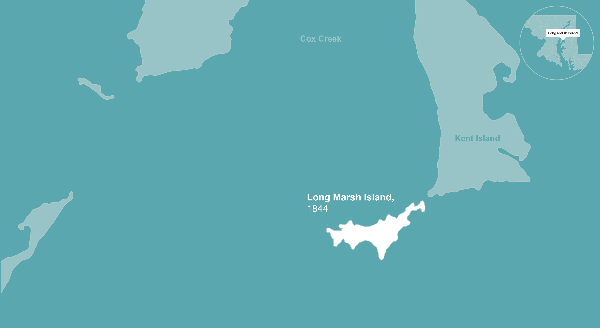

150 years ago, Long Marsh Island, off the coast of Queen Anne's County, Maryland, boasted X acres of land.
A century later, its land had shrunk X percent.
By 1992, it was gone.
Experts estimate hundreds like it have disappeared since the the English explored the area in the 1600s.

These are the Chesapeake Bay's Lost Islands